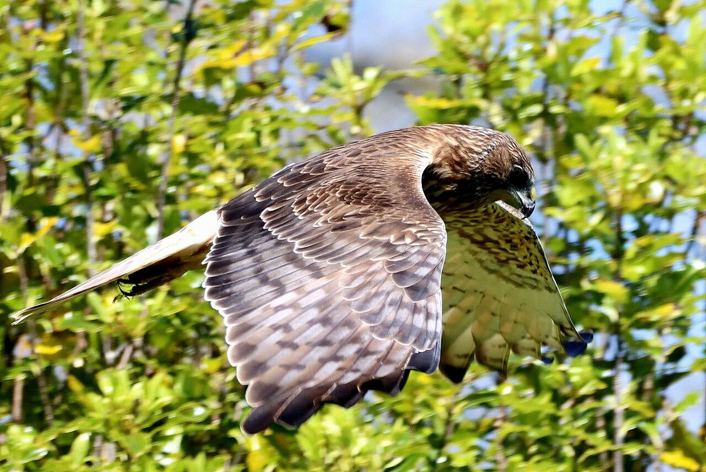

Swamp harrier
kāhu · Circus approximans
Usually seen gliding low over open slopes, clearings and the shoreline.
Story
The largest of the world's 16 harrier species, and a bird that has thrived since forest was cleared for farms. On Kawau it is one of the few predators able to take peafowl eggs and chicks.
Behaviour
Quarters low over open ground with its wings in a shallow V, dropping feet-first onto rats, mice, rabbits and birds. Road-kill and other carrion are a big part of its diet. Magpies and plovers mob it relentlessly.